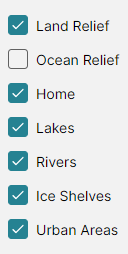
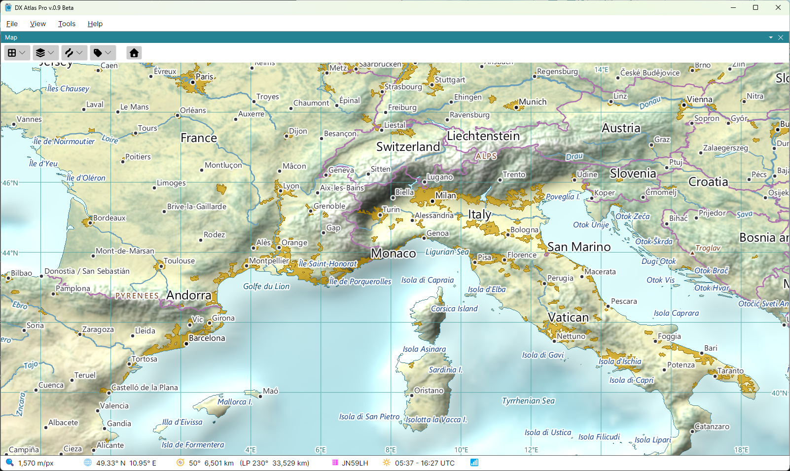
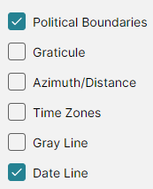
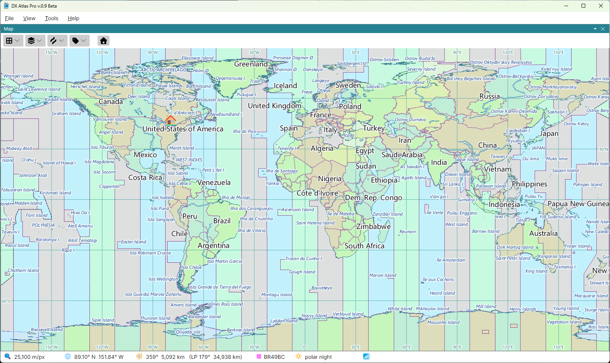
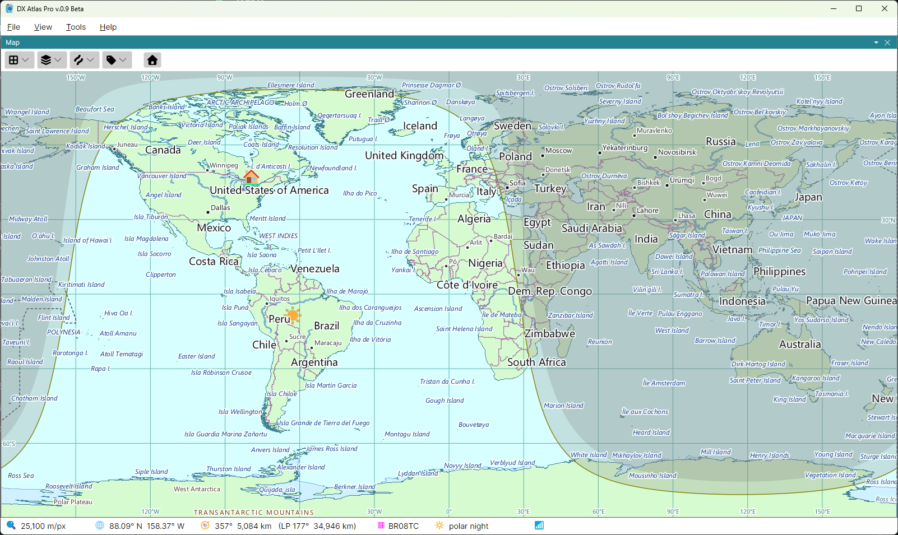
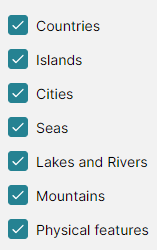

Layers, Lines and Labels
Three buttons on the map toolbar choose what the map shows: Layers, Lines and Labels. Each opens a list of checkboxes; tick a checkbox to show its layer, clear it to hide the layer. The choices are made for each map separately, and saved when the program closes.
The Amateur Radio layers - DXCC entities, zones, IOTA groups and the rest - are in a fourth button's menu, shown only with the Amateur Radio functions on; see The Amateur Radio Switch.
Layers

- Land Relief - the shaded relief and land cover of the land. Cleared, the land is one flat colour;
- Ocean Relief - the depth and the shaded relief of the sea floor. Cleared, the sea is one flat colour. Clear both to read boundary lines against a plain map; the two flat colours are set in the Colors Dialog;
- Home - the mark of your home location, a house, or an antenna with the Amateur Radio functions on;
- Lakes, Rivers, Ice Shelves and Urban Areas.

Lines

- Political Boundaries - the borders between countries;
- Graticule - the lines of latitude and longitude, labelled with their degrees;
- Azimuth/Distance - great circles radiating from your home location, and circles of equal distance around it, labelled with their bearings and distances. The distance circles are drawn every 3000 km, the length of an F2 hop. On the azimuthal map they radiate from the centre of the map;
- Time Zones - the time zones, filled in alternating colours;
- Gray Line - the day and night terminator and the night shadow, with the sun at the point where it is overhead;
- Date Line - the international date line.
The coastline has no checkbox: it is always drawn.


The Gray Line
The gray line follows the sun as the time goes by, at the time the Clock panel shows: the computer's time, or a fixed time of your choice. Which of its parts are drawn - the sun, the terminator, the twilight shadow and the night shadow - where the night shadow begins, and how often it is redrawn are set in the Map section of the Settings Dialog.
Labels

- Countries;
- Islands - islands and island groups;
- Cities;
- Seas - oceans, seas, gulfs, bays and ice shelves;
- Lakes and Rivers;
- Mountains - mountain ranges and summits;
- Physical features - deserts, plateaus, peninsulas, capes and other regions.
The labels are placed so that they never overlap. At a world view only the largest features are labelled, and more labels appear as you zoom in.
Tooltips
Hover the mouse over a label to see its tooltip: the full name of the item, or, for the Amateur Radio labels, the name of a DXCC entity or province, or the definition of a zone or a call area. Click a label to see the Item Details of the item it names.
Colours
The colours and line widths of all layers, and the colours, sizes and fonts of all labels, are set in the Colors Dialog.